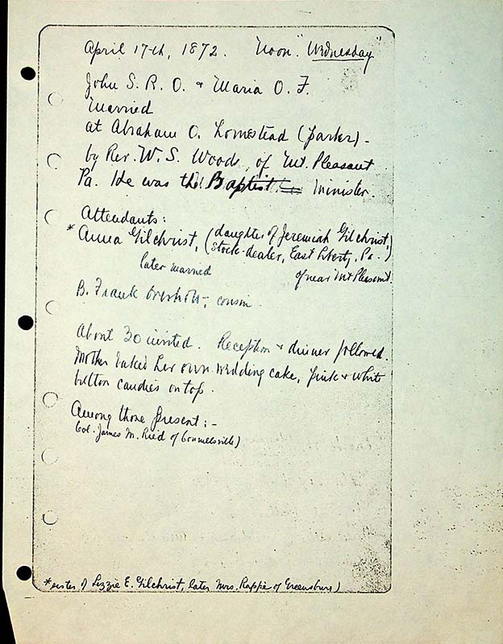
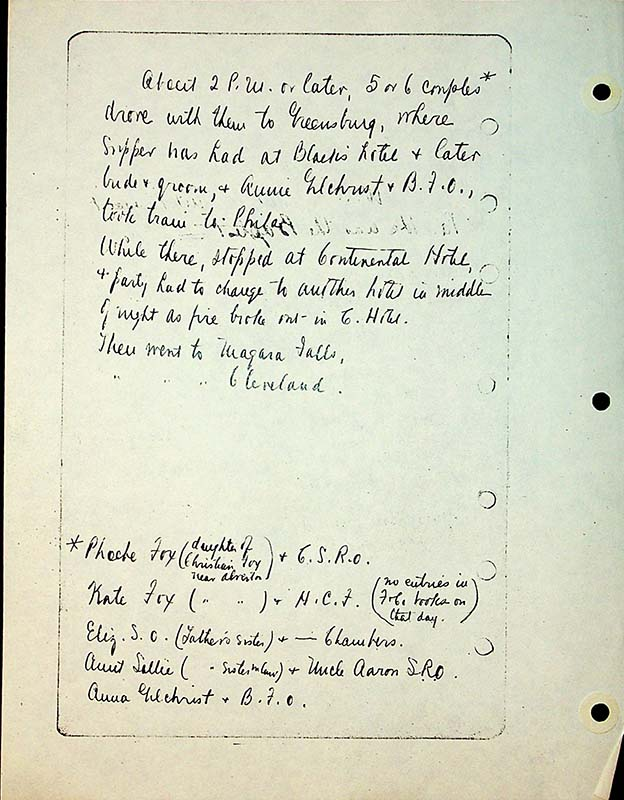

April 17th, 1872. Noon. "Wednesday”
John S.R.O. & Maria O. T Married At Abraham O. homestead (parker)- By Rev. W. S. Woods of Mt. Pleasant PA. He was the Baptist minister. Attendants:
Anna Gilchrist(daughter of Jeremiah Gilchrist, stock-dealer, East Liberty, PA) later married of near Mt. Pleasant
B. Frank Overholt- cousin
About 30 invited. Reception and dinner followed. Mother baked her own wedding cake, pink & white button candies on top.
Among those present;-
Col. James M Reid of Connellsville) [sic] *sister of Lizzie Gilchrist, later Mrs. Rappe of Greensburg
About 2 P.M. or later, 5 or 6 couples* drove with them to Greensburg, where supper was had at Blacks hotel & later bride & groom, & Annie Gilchrist & B.F.O, took train toPhila.
While there, stopped at Continental Hotel, & party had to change to another hotel in middle of the night as fire broke out in C. Hotel. Then went to Niagara Falls. " " " Cleveland.
*Pheobe Fox (daughter of Christian Fox near Alverton) & C.S.R.O. Kate Fox (" " " ") & H.C. F (no entries in {FC??} books on that day) Elizabeth S.O (father’s sister) & – Chambers Aunt Sallie ( " sister in law) & Uncle Aaron S.R. O Anna Gilchrist & B.F.O